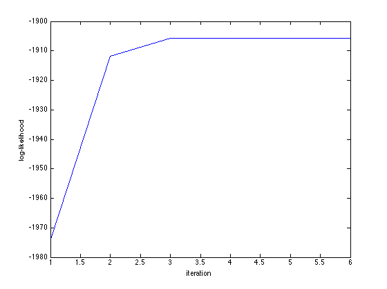
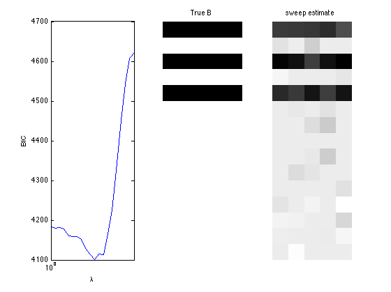
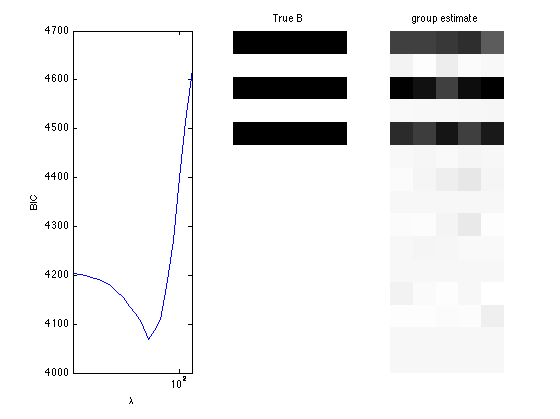
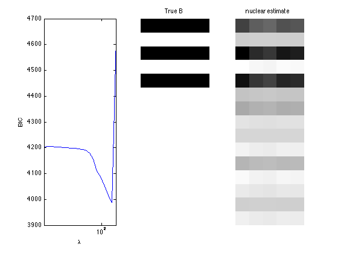

Dirichlet-Multinomial regression and sparse regression
A demo of Dirichlet-Multinomial regression and sparse regression
Contents
Generate Dirichlet-Multinomial random vectors from covariates
clear; % reset random seed s = RandStream('mt19937ar','Seed',1); RandStream.setGlobalStream(s); % sample size n = 200; % # covariates p = 15; % # bins d = 5; % design matrix X = randn(n,p); % true regression coefficients B = zeros(p,d); nzidx = [1 3 5]; B(nzidx,:) = ones(length(nzidx),d); alpha = exp(X*B); batchsize = 25+unidrnd(25,n,1); Y = dirmnrnd(batchsize,alpha); zerorows = sum(Y,2); Y=Y(zerorows~=0, :); X=X(zerorows~=0, :);
Fit Dirichlet-Multinomial regression
tic; [B_hat, stats_dm] = dirmnreg(X,Y); toc; display(B_hat); display(stats_dm.se); display(stats_dm); % Wald test of predictor significance display('Wald test p-values:'); display(stats_dm.wald_pvalue); figure; plot(stats_dm.logL_iter); xlabel('iteration'); ylabel('log-likelihood');
Elapsed time is 0.103277 seconds.
B_hat =
1.0433 1.0273 1.0261 1.0718 0.9714
0.0732 -0.0784 0.1226 -0.0149 0.0134
1.2702 1.2427 1.0411 1.1994 1.2891
-0.0160 0.0594 0.0091 0.0163 0.0922
1.0395 0.9820 1.1324 0.9810 1.1368
-0.0436 0.0190 -0.0366 0.0211 0.0049
0.0587 0.1417 0.1773 0.2716 0.1444
-0.0450 -0.0731 -0.0828 -0.0449 -0.0730
-0.0067 0.0120 0.0913 0.1893 -0.0101
0.0947 0.2141 0.1521 0.0770 0.0679
0.0713 0.1136 0.0868 0.0604 0.1609
-0.0220 -0.1262 -0.1545 -0.1011 -0.1984
-0.1732 -0.1461 -0.0800 -0.0821 0.0261
-0.1059 -0.0128 -0.0464 -0.0136 -0.1410
-0.0926 -0.1360 -0.0706 -0.0864 -0.0902
ans =
0.1057 0.1004 0.1013 0.1042 0.0994
0.1047 0.1008 0.1023 0.1021 0.0994
0.1034 0.0994 0.0992 0.1002 0.0992
0.0928 0.0950 0.0940 0.0943 0.0921
0.1021 0.0987 0.0994 0.1038 0.1003
0.0847 0.0825 0.0866 0.0870 0.0807
0.0861 0.0859 0.0886 0.0881 0.0886
0.0858 0.0860 0.0887 0.0869 0.0852
0.0912 0.0852 0.0866 0.0881 0.0841
0.0910 0.0887 0.0932 0.0945 0.0864
0.0996 0.0963 0.0963 0.1007 0.0950
0.0910 0.0914 0.0967 0.0928 0.0945
0.0915 0.0873 0.0945 0.0969 0.0911
0.0895 0.0834 0.0911 0.0880 0.0835
0.0866 0.0865 0.0873 0.0879 0.0858
stats_dm =
BIC: 4.2088e+03
AIC: 3.9614e+03
dof: 75
iterations: 6
logL: -1.9057e+03
logL_iter: [1x6 double]
yhat: [200x5 double]
se: [15x5 double]
wald_stat: [1x15 double]
wald_pvalue: [1x15 double]
H: [75x75 double]
gradient: [75x1 double]
observed_information: [75x75 double]
Wald test p-values:
ans =
Columns 1 through 7
0 0.2639 0 0.6872 0 0.9274 0.0312
Columns 8 through 14
0.9412 0.0450 0.2049 0.6178 0.1170 0.1066 0.3226
Column 15
0.7632
 Fit Dirichlet-Multinomial sparse regression - lasso/group/nuclear penalty
penalty = {'sweep','group','nuclear'};
ngridpt = 20;
dist = 'dirmn';
for i = 1:length(penalty)
pen = penalty{i};
[~, stats] = mglm_sparsereg(X,Y,inf,'penalty',pen,'dist',dist);
maxlambda = stats.maxlambda;
lambdas = exp(linspace(log(maxlambda),log(maxlambda/100),ngridpt));
BICs = zeros(1,ngridpt);
tic;
for j=1:ngridpt
if j==1
B0 = zeros(p,d);
else
B0 = B_hat;
end
[B_hat, stats] = mglm_sparsereg(X,Y,lambdas(j),'penalty',pen, ...
'dist',dist,'B0',B0);
BICs(j) = stats.BIC;
end
toc;
% True signal versus estimated signal
[bestbic,bestidx] = min(BICs);
lambdas(bestidx)
B_best = mglm_sparsereg(X,Y,lambdas(bestidx),'penalty',pen,'dist',dist);
figure;
subplot(1,3,1);
semilogx(lambdas,BICs);
ylabel('BIC');
xlabel('\lambda');
xlim([min(lambdas) max(lambdas)]);
subplot(1,3,2);
imshow(mat2gray(-B)); title('True B');
subplot(1,3,3);
imshow(mat2gray(-B_best)); title([pen ' estimate']);
end
Elapsed time is 0.817734 seconds. ans = 10.8980 Elapsed time is 0.816444 seconds. ans = 30.2672 Elapsed time is 1.602614 seconds. ans = 194.8746  